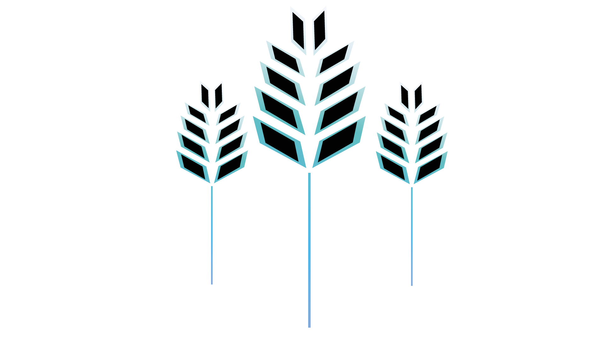
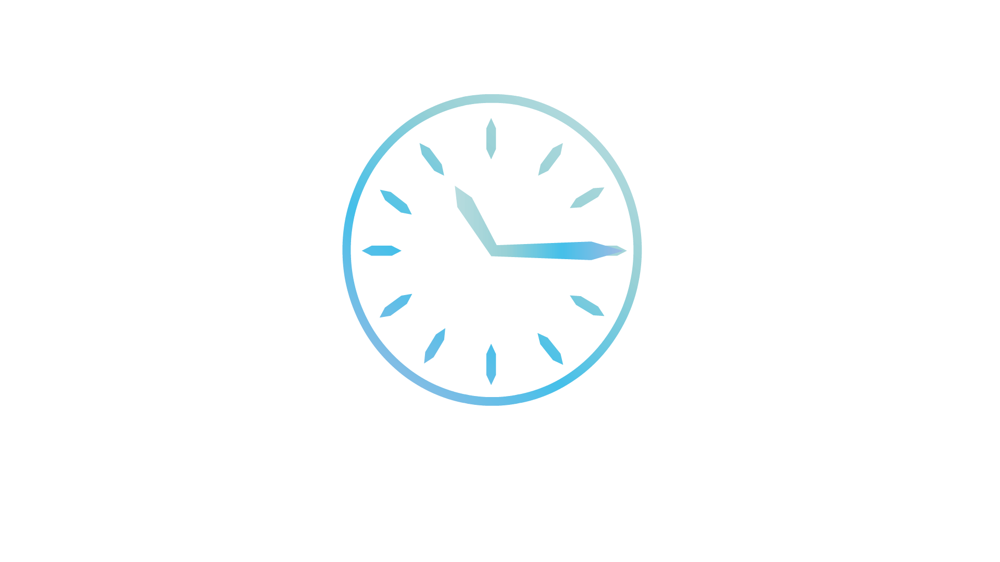

Les ingrédients principaux sont les céréales maltés (l’orge), l’eau, le houblon et la levure.

1) Le nettoyage : Nettoyer les orges (la céréale maltée que l’on choisit qui est en général la plus utilisée). Cette étape va nous aider à retirer les particules étrangères comme les cailloux, etc.
2) Le trempage : Tremper les grains d’orges dans l’eau afin d’initier la germination.
3) La germination : Dans cette étape, les enzymes contenues dans les grains d’orges vont s’activer. Elles sont essentielles au maltage et aux processus suivants.
4) Le touraillage : Sécher et chauffer les grains. Ceci va provoquer l’arrêt de la germination et former les couleurs et le goût des grains. Le touraillage permet également de réduire le risque de détérioration.

1) Le concassage : Broyer les grains pour libérer des enzymes (protéines).
2) L’empâtage : Mélanger les grains avec de l’eau chaude pour libérer l’activité enzymatique et « décomposer » les sucres pour que ce soit digéré par les levures.
3) La filtration : Séparer la partie solide de la partie liquide.
4) L’ébullition : Ajouter les houblons ( responsable de l’amertume et de l’arôme) et laisser évaporer les composés non désirés (perte de l’activité enzymatique, stérilisation et augmentation de la couleur).
5) La clarification : Enlever les éléments en suspension par centralisation
6) Le refroidissement : Laisser refroidir rapidement pour éviter toute contamination grâce à un serpentin avec une circulation d’eau froide.
Il s’agit du processus durant lequel les levures transforment les sucres en alcool et en CO2, ainsi que d'éléments secondaires impactant le goût.
2 étapes de fermentation :
- La fermentation principale qui donne une bière jeune (souvent en 48 heures, 3j entre 18-20°C).
- La fermentation secondaire ou maturation (optionnelle, laisser la bière pendant 2 à 3 semaines).
Il ne reste plus qu’à filtrer votre bière, puis de choisir son récipient et enfin vous pourrez la savourer !